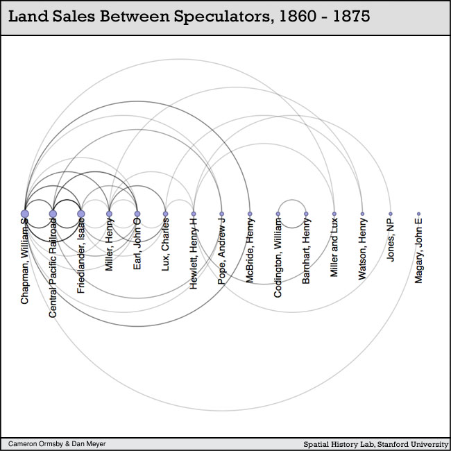

I was fortunate enough to be asked by the Spatial History Project to take part in the review of undergraduate summer projects. The particular paper and interactive visualization that I reviewed was “Building the New Order: 1938-1945″, an exploration of changing borders and administration among Nazi-controlled territories during World War II. Peer review of digital academic media is still in it’s infancy, as is the creation of such media, but still it’s striking that this kind of general spatial analysis of political geography during the most studied period in history is still rare, as are the resources necessary to perform such an analysis.

Cameron Ormsby's chart depicting relationships between land speculators in Fresno County at the turn of the century from her excellent paper on the subject.
It mirrors my own experience with acquiring historical GIS data for use in my work to support Mapping the Republic of Letters. While the study of European intellectual history and World War II military history is seemingly as popular as ever, the creation of valuable new historical GIS data and analysis for the periods is still in its infancy. The work by undergraduates in the Spatial History Project, which was presented today, demonstrated that a motivated junior scholar (whether graduate student or even advanced undergraduate) can meaningfully contribute to the formation of new research using novel digital techniques even amongst the most popular areas of humanities study. And not only are these students developing new avenues of study, they’re also developing technical skills that will serve them within and without the academy, which is just one more reason that every humanities undergraduate should seriously consider pursuit of the opportunities presented by digital humanities centers such as The Spatial History Project.